![Studio Medico San Martino]()
Lo studio
Dr.ssa med. Ilaria Minio
Specialista FMH in medicina interna generale
Lo Studio Medico San Martino è uno studio di medicina di famiglia a Mendrisio e occupa per intero il quarto piano dell'edificio di Via San Martino 16A: sale d'attesa, ambulatori, radiologia, laboratorio e sala trattamenti sono tutti sullo stesso piano. La Dr.ssa Minio segue i pazienti adulti per le cure di base, i controlli periodici, la gestione delle malattie croniche e le urgenze ambulatoriali, e coordina le visite presso gli specialisti che ricevono nello studio.
Il lunedì pomeriggio la Dr.ssa Minio è dedicata alle visite a domicilio per i pazienti che non possono recarsi in studio.
Le consultazioni si svolgono in italiano e in inglese; sono possibili anche in tedesco e in francese.
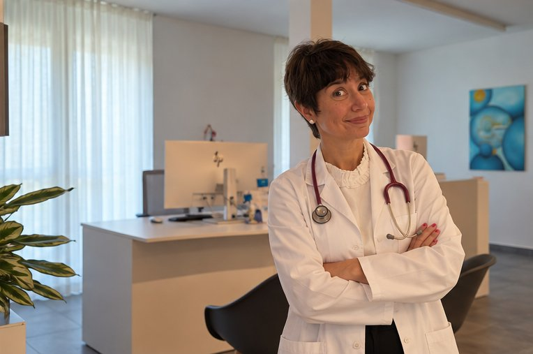
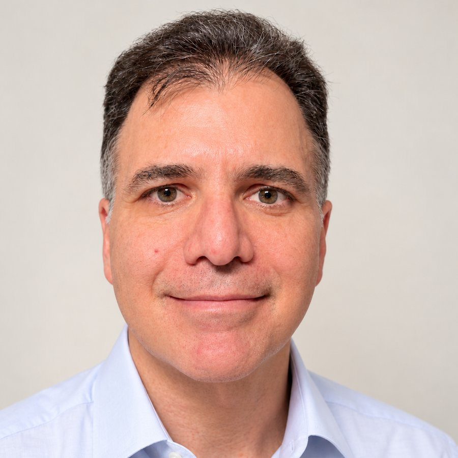
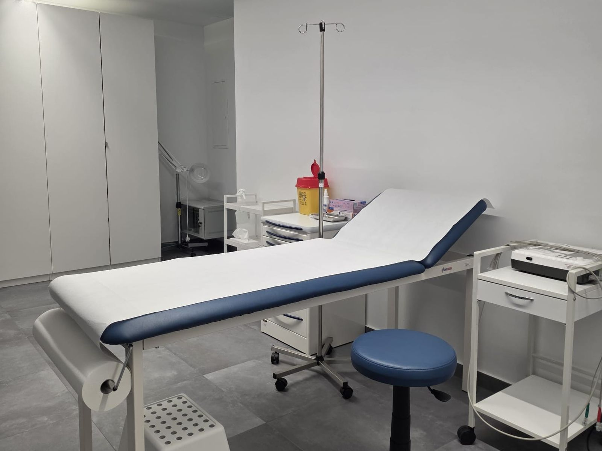
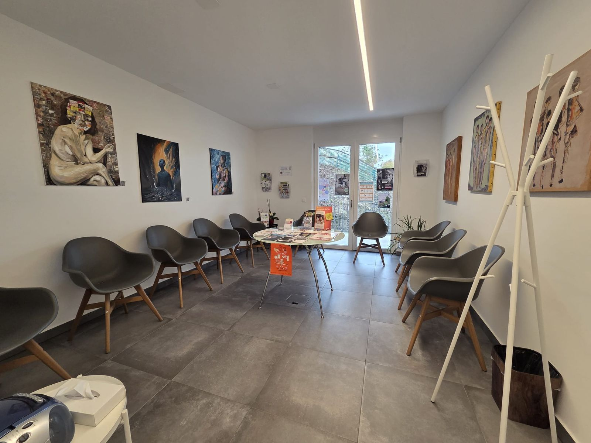
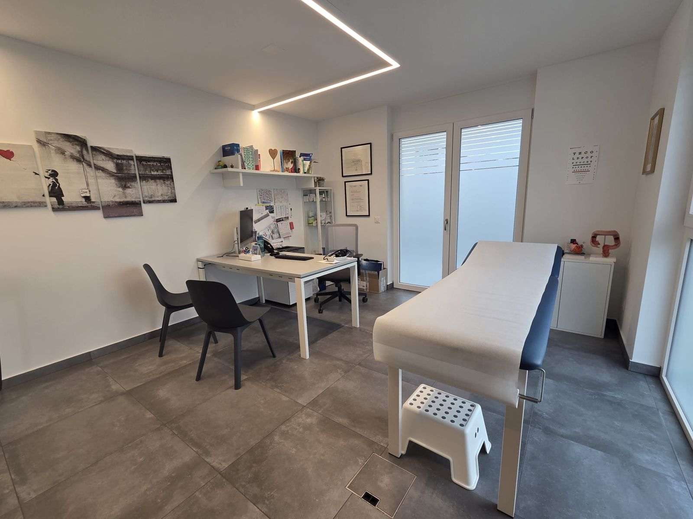
Servizi in sede
Esami e trattamenti senza spostarsi
L'intero quarto piano è dedicato allo studio: senza cambiare edificio sono disponibili i principali esami diagnostici e una sala attrezzata per medicazioni e terapie infusionali.
Radiologia
Esami radiologici in sede, con refertazione dello specialista radiologo.
Ecografia
Esami ecografici eseguiti direttamente nello studio.
Laboratorio
Prelievi ed esami di laboratorio con risposta rapida.
Punto prelievi Medisyn
Prelievi del sangue anche su prescrizione di altri medici, con analisi presso il laboratorio Medisyn.
Sala medicazioni e infusioni
Infusioni, medicazioni, iniezioni e piccoli interventi ambulatoriali, con osservazione in sede quando necessario.
Visite a domicilio
Il lunedì pomeriggio, per i pazienti che non possono raggiungere lo studio.
Cure infermieristiche
Medicazioni, iniezioni e controlli con l'infermiera di studio.
Neurologia e perizie
Visite neurologiche specialistiche e perizie medico-assicurative a cura del PD Dr. med. Leonardo Sacco, perito certificato SIM (Swiss Insurance Medicine).
Visite specialistiche
Pediatria, allergologia, ortopedia e traumatologia, chirurgia, radiologia, psicologia e neuropsicologia, fisioterapia, agopuntura e riflessologia: giorni e orari di presenza.
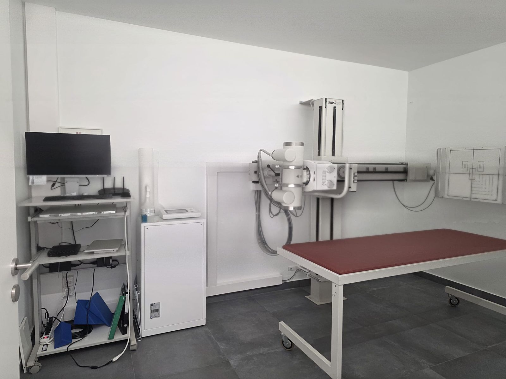
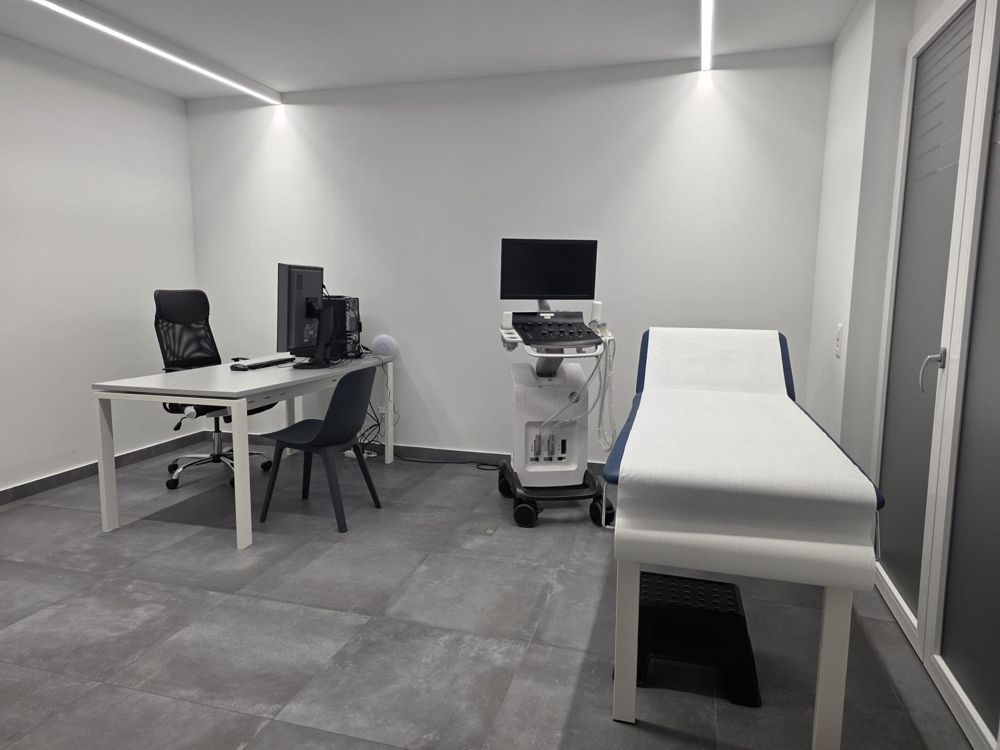
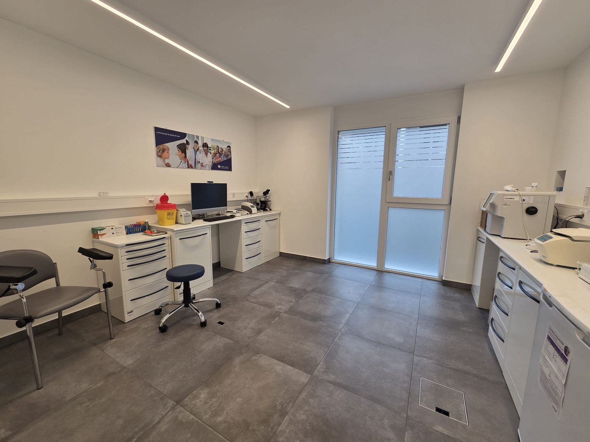
Specialisti e terapisti
Chi riceve nello studio, e quando
Tutte le visite specialistiche sono su appuntamento: per prenotare chiamate il segretariato al +41 91 640 50 40.
| Nome | Specialità | Lunedì | Martedì | Mercoledì | Giovedì | Venerdì |
|---|---|---|---|---|---|---|
| Dr.ssa med. Ilaria Minio | Medicina interna | 8.30 – 17.00pomeriggio: visite a domicilio | 8.30 – 17.00 | 8.30 – 12.00 | 8.30 – 17.00 | 8.30 – 16.00 |
| Annanisia Centra | Psicologia | tutto il giorno | ||||
| Marika Urbani | Agopuntura | fino alle 16.00 | ||||
| Dr. med. Mario Manganiello | Radiologia | mattina | ||||
| Anna Damonti | Riflessologia | tutto il giorno | ||||
| PD Dr. med. Leonardo Sacco | Neurologia | 8.30 – 13.30 | ||||
| Martino Ceroni | Neuropsicologia | saltuariamente, pomeriggio | 9.30 – 15.00 | |||
| Edoardo Sagnella | Fisioterapia | 13.00 – 17.00 | 8.00 – 12.00 | |||
| Dr.ssa med. Bianca Maria Regazzoni | Pediatria | pomeriggio | pomeriggio | mattina | ||
| Andrei Sorescu | Psicologia (bambini e adulti) | pomeriggio | pomeriggio | |||
| Dr.ssa med. Chiara Mondino | Allergologia | 9.00 – 16.00ogni 14 giorni | ||||
| Elisabeth Vella | Cure infermieristiche | pomeriggio | pomeriggio | |||
| Dr. med. Axel-Michael Pippow | Ortopedia e traumatologia | mattinanon tutte le settimane | ||||
| Dr. med. Francesco Salmoiraghi | Chirurgia | una volta al mese |
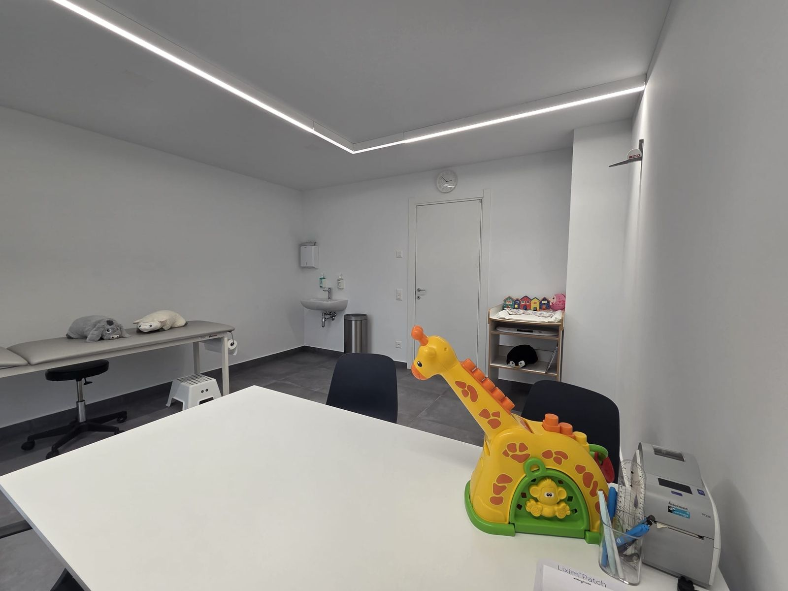
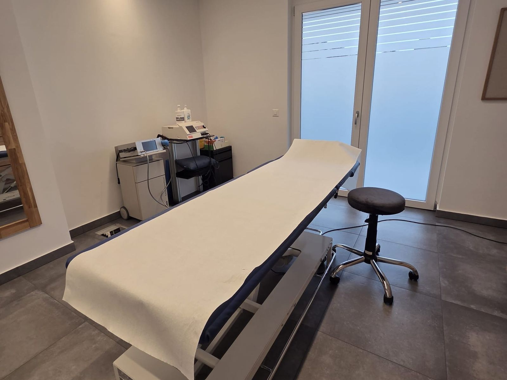
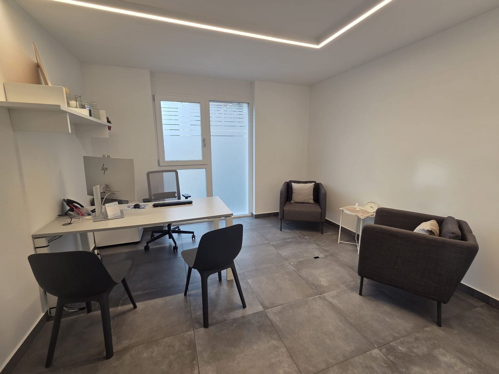
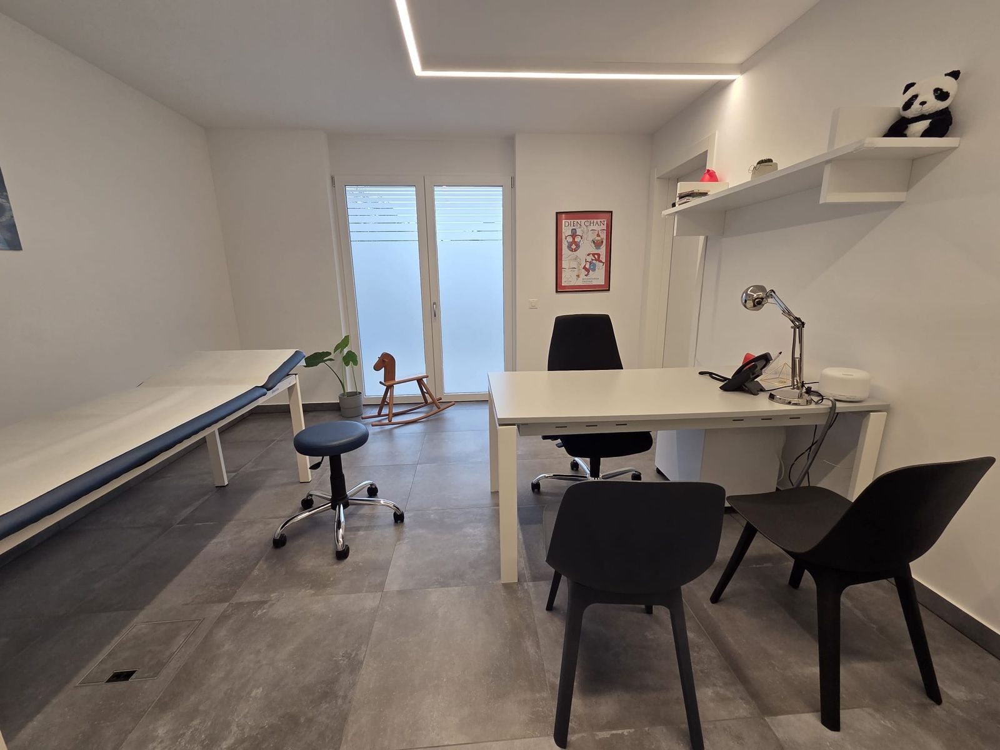
Il team di studio
Chi vi accoglie
Desirée Di Stefano
Assistente di studio medico
Katia Jans Di Ludovico
Assistente di studio medico
Valentina Benso
Apprendista assistente di studio medico
Myrto Missirlis
Segretaria
Orari e contatti
Consultazioni della Dr.ssa Minio
Le visite si svolgono su appuntamento. In caso di emergenza chiamate il 144.
Via San Martino 16A
6850 Mendrisio
Come arrivare
Dove siamo
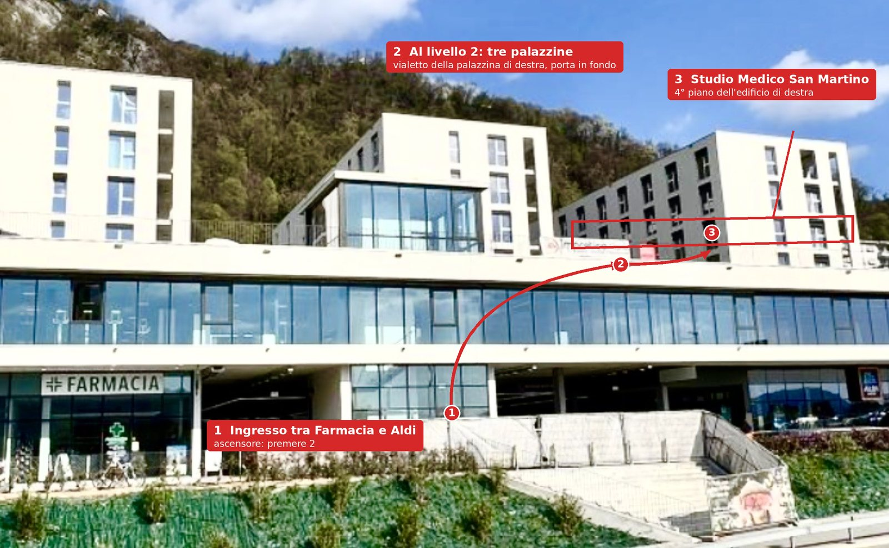
Dall'ingresso allo studio
- In Via San Martino, entrate dall'ingresso tra la farmacia e l'Aldi.
- In ascensore premete 2. All'uscita vi trovate di fronte tre edifici.
- Andate verso la palazzina di destra e percorrete tutto il vialetto: la porta d'ingresso è una sola, in fondo.
- Salite al 4° piano: tutto il piano è dello studio. Uscendo dall'ascensore, l'ingresso dello studio è a sinistra: annunciatevi sempre alla reception, anche per gli esami radiologici (la radiologia, a destra dell'ascensore, si raggiunge dall'interno dello studio).
Il percorso è interamente servito da ascensori ed è accessibile in sedia a rotelle.
In treno
Fermata TILO Mendrisio S. Martino, a pochi passi dallo studio.
In autobus
Fermata Mendrisio, S. Martino, linea 2 (Chiasso – Mendrisio FFS – S. Martino – Cantine di Sotto).
In auto
Uscita autostradale Mendrisio; lo studio si trova nell'area commerciale di San Martino.
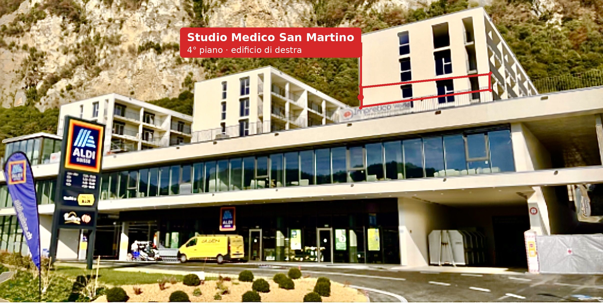